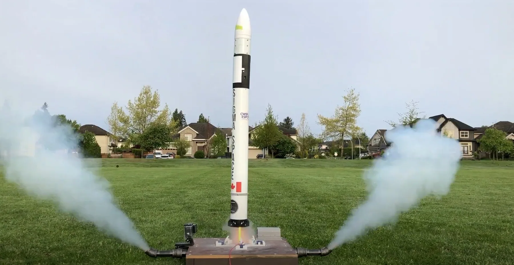
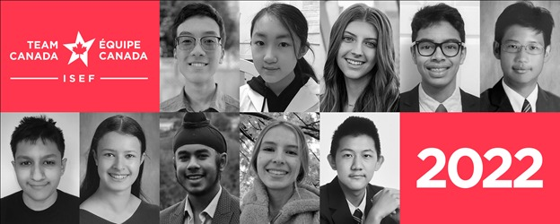
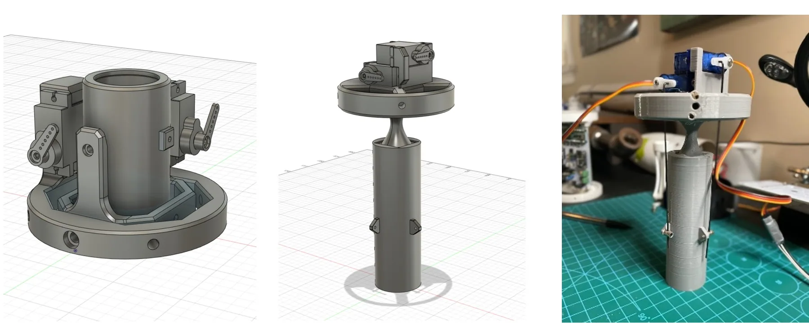
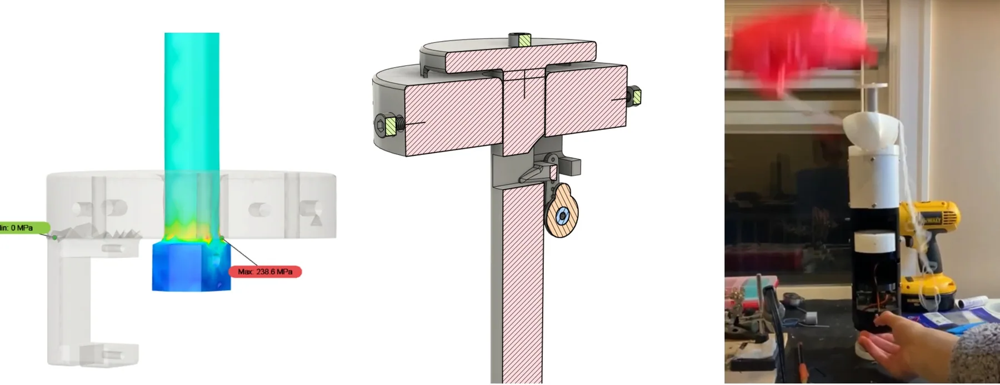
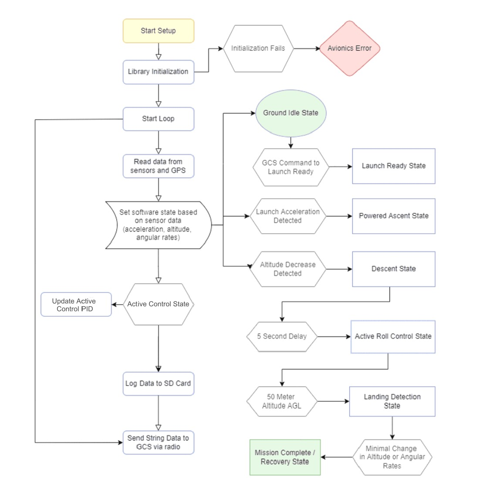
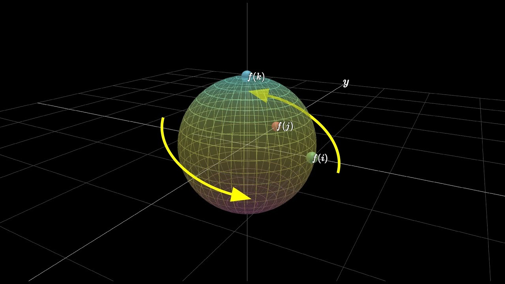
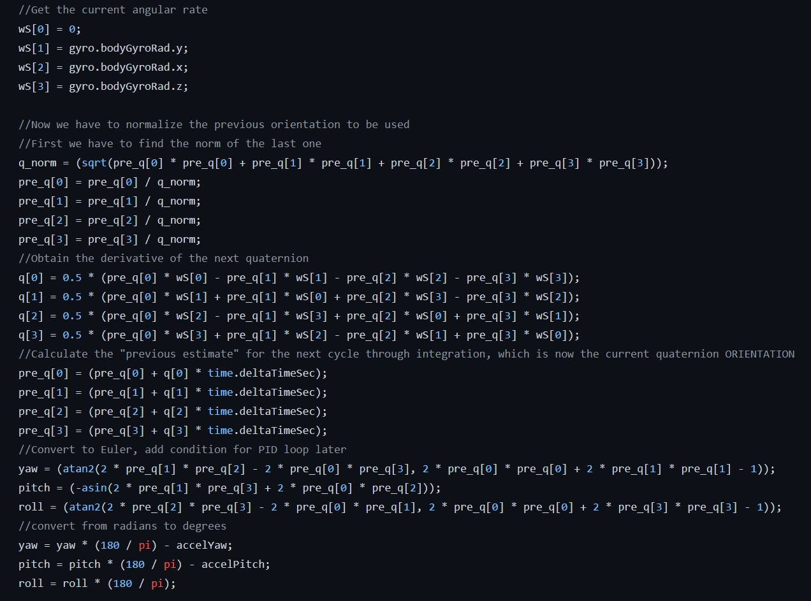
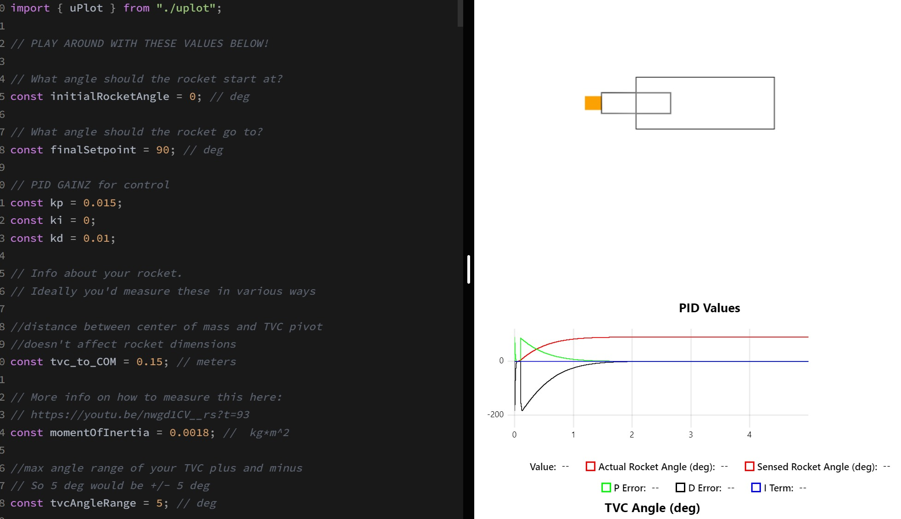

The “Sigma Space” TVC rocket is my pride and joy. It’s a thrust-vectoring, self-guided rocket utilizing fully custom-made, self-designed hardware, software, and electronics. It’s built for scalable verification of control systems simulation and tuning. This was my first project involving CAD, electronics design, or coding.
Competitions
This rocket, serving as a scale-model test bed for development of TVC for space vehicles, participated in a lot of science fairs.
International Science and Engineering Fair


I participated as one of the 10 members of Team Canada for ISEF with the rocket.
Canada-Wide Science Fair
I won first place at the Canada-Wide science fair, with over 300,000 participants and 500 finalists in Ottowa. Awards earned included Platinum, Gold, Youth Can Innovate Grand Prize, and Challenge Category Winner.
BC/Yukon Science Fair
I won the Michael Crooks Physics Prize, Engineering and Geoscientists of BC, and the Innovator of BC Scholarship here at my first science competition.
Overall, I loved my experience presenting my work.
Hardware
Thrust Vectoring Gimbal


The thrust vectoring gimbal is the center of the hardware show. Designed to be scalable, it uses two servos to imitate linear actuators in the servo bay, transmitting movement through 1mm steel pushrods and a compliant joint.
Recovery System


I designed a “slingshot” style ejection system, possibly the first of its kind. It uses a servo-enabled pin to hold and release the steel-spring ejection system at 17m/s, or 61 kilometers per hour.
Airframe


The airframe was designed for easy access to the internals and easy mounting of all components.
There were also some extra things like the launchpad and reaction control wheel.
I modelled it in Fusion360, simulated it in Ansys Fluent, and built it out of 3D-printed components.
Software
State Machine


The flight code is structured as a finite state machine with nonlinear progression to different stages.
State Machine


The orientation system uses a quaternion orientation system, since it runs faster on the microcontroller and isn’t susceptible to gimbal lock. It took me quite a while to derive the code from a paper I found.


Controls and Tuning


The rocket flies on a PID controller, tuned both heuristically with ground testing and with a Python/JavaScript simulation. A full state feedback system being designed and tuned in Simulink (finally got it!) is being built right now.
Ground testing utilizes a 3-axis 3D printed gimbal and a 2200kv brushless DC motor. Zeigler-Nichols tuning is used to lock in the gains.
Electronics


The flight computer was my first ever design, and I’m pretty proud of the result (though there were definitely some issues with power delivery). It’s got a Teensy 3.6, BMI088, BMP280, a flash chip, and two pyro and servo channels. This controls and flies the whole rocket.